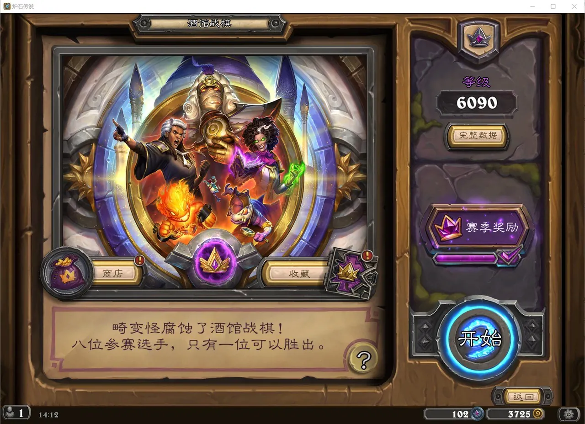
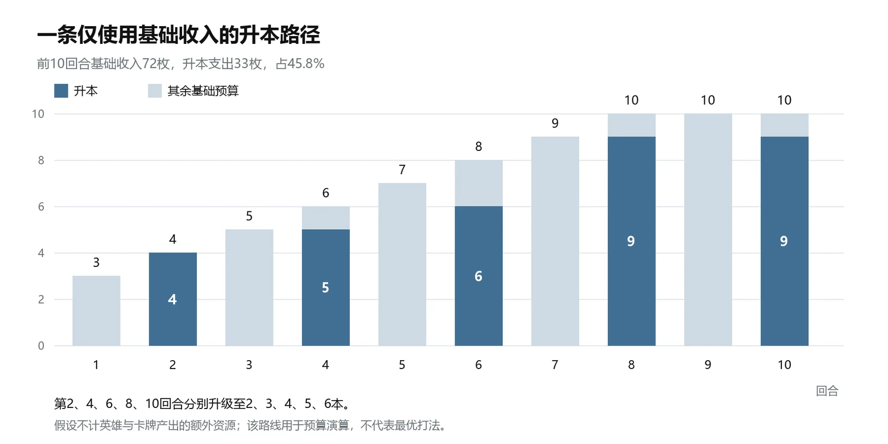
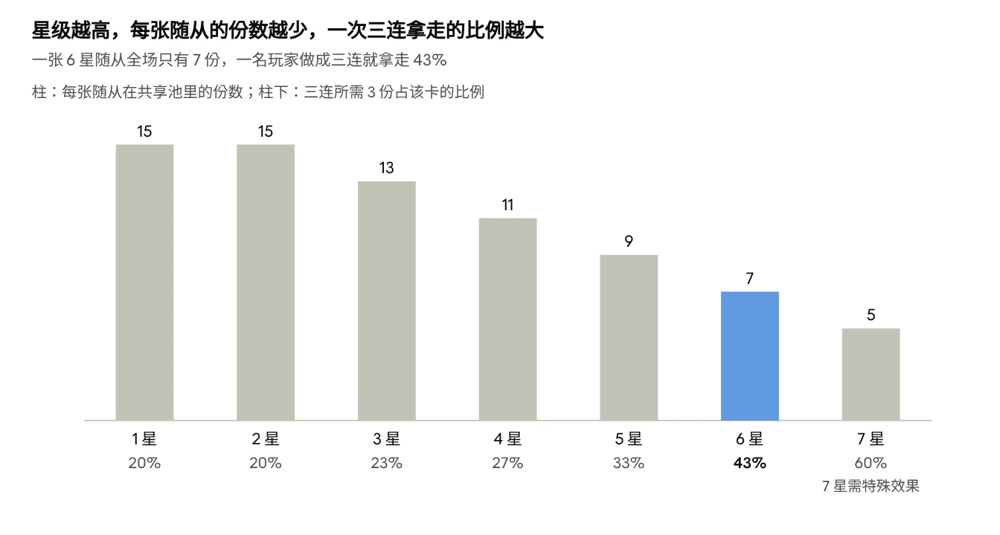
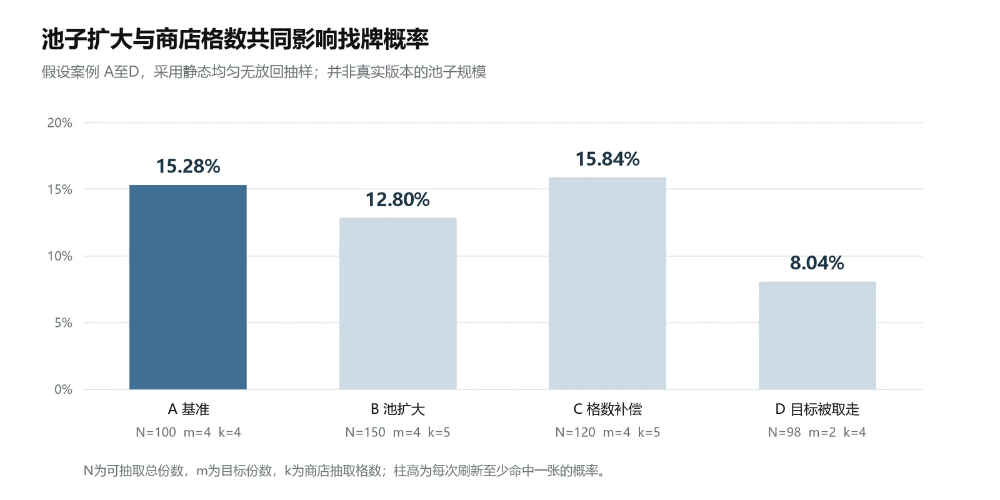
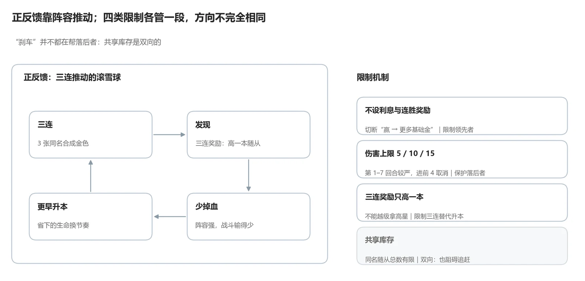

×00
バトルグラウンドにはカード収集がなく、8 人が 1 つのミニオンプールを共有し、勝敗はほぼ 1 試合内の資源判断で決まります。この分析はメカニクス・ダイナミクス・エステティクスの三層で 1 試合を見ます。ゴールドがどう盤面になるか、共有プールがカード探しのコストをどう決めるか、体力が投資のタイミングをどう縛るか。シーズン 14、2026 年 10 月時点。このモードを 501 時間遊び、過去シーズンの最高は 10000 超えです。

01
強弱の差が開かなければ順位に意味がなく、開くのが早すぎれば多くの人がすぐに打つ手を失います。試合中の重要な判断の多くは、「今すぐ形にする」か「より良い供給を待つ」かの取捨選択です。
02
ルールはシーズン 14 の公式パッチと実機画面から。曲線と確率は明記した仮定のもとでの自前の計算で、変数の関係を示す数学的な例であり、実際の試合統計ではありません。



03
トリプルが雪だるま式の拡大を生み、4 つの仕組みが段階ごとに拡大を抑えます。そのすべてが遅れている側を助けるわけではありません。

| 体力 + アーマー | 上限ダメージの累計 | 最速の脱落 |
|---|---|---|
| 30 + 0 | 5 + 5 + 5 + 10 + 10 = 35 | 5 ターン目 |
| 30 + 10 | 35 + 10 = 45 | 6 ターン目 |
| 30 + 20 | 45 + 10 = 55 | 7 ターン目 |
04
経済の土台は安定しており、課題は情報の透明性、シーズン入れ替えの学習コスト、課金とランク戦の関係に集中しています。情報の見せ方だけを変え、まず課題の存在を確かめられる案を先にします。
| 優先度 | 課題 → 案 | コストとリスク |
|---|---|---|
| ① | 初期枚数、見た情報、実際の在庫が混ざっている → プールのルールと既見情報の説明 | 低；それでも判断時間と戦略は変わるので評価が必要 |
| ② | シーズンの仕組みの入れ替わりが速い → 闇の贈り物とトリンケットのタイミング練習 | 中；毎シーズン練習コンテンツが必要 |
| ③ | 課金でヒーロー候補が増える → ランク戦の候補数を統一 | シーズンパスの売りを直接弱めるので、収益化と一緒に決める必要 |
| ④ | 中盤で遅れると挽回が難しい → 遅れている側への補償 | 「基本収入は全員同じ」という原則に触れ、わざと体力を減らす行為を誘う恐れ。優先しない |
ショップに実際の残り枚数を表示するのは画面の変更に見えますが、それまで隠れていた情報を公開するので、情報のルール自体が変わります。初版は隠れた情報を公開しない変更だけにします。
05
06
全 35 ページ、実機スクリーンショット 8 枚、分析図 7 枚、表 27 個と出典を含みます。下でそのまま読めます（中国語）。